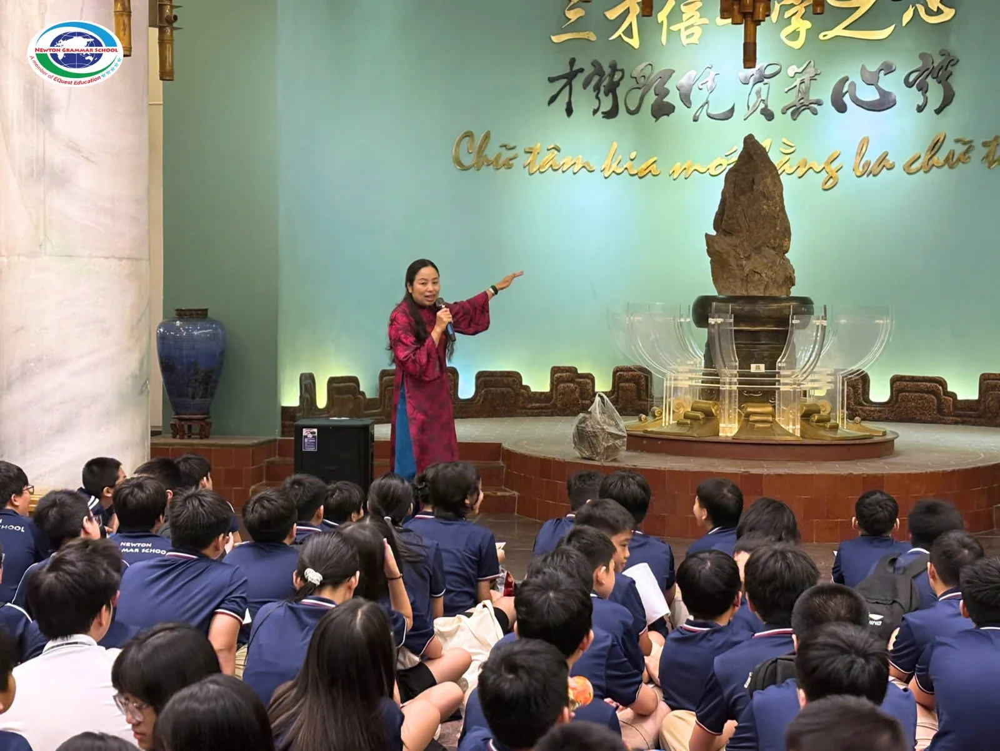
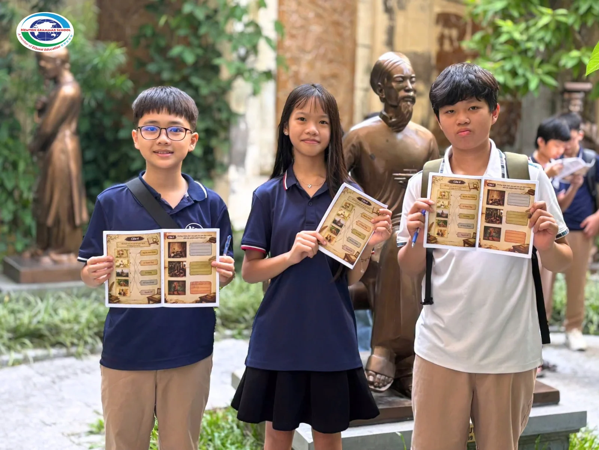
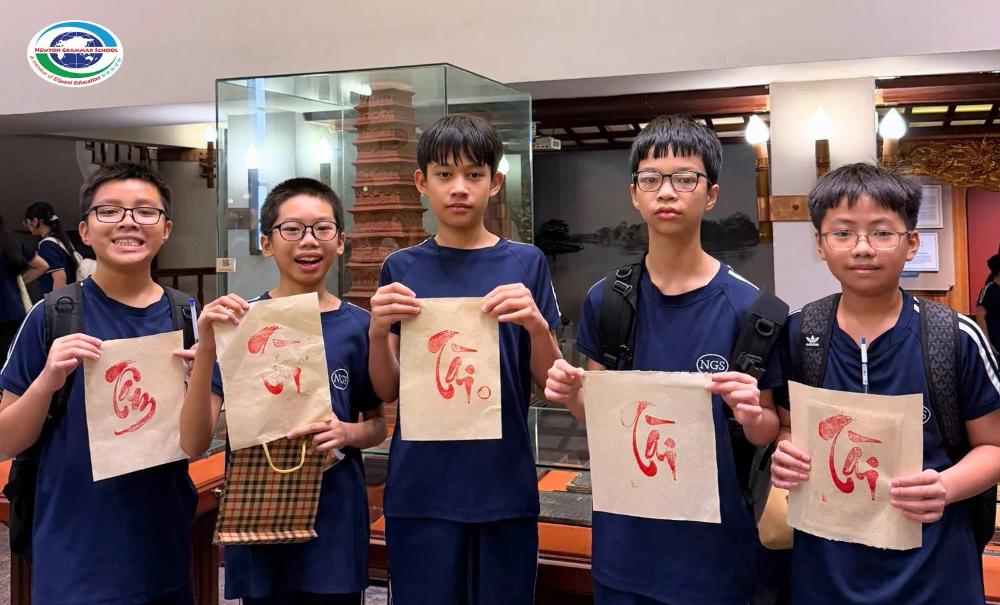
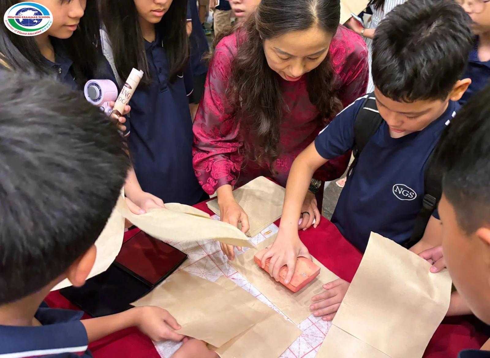

Ngày 24/9/2026, học sinh khối 7 trường THCS - THPT Newton đã có một hành trình học tập đầy ý nghĩa tại Bảo tàng Văn học Việt Nam - nơi những trang văn, vần thơ và các nhân vật được kể lại trong dòng chảy lịch sử dân tộc.

Ngay tại không gian trung tâm tầng 1, các em được tìm hiểu về hòn đá hình cây bút - biểu tượng gắn với hành trình gìn giữ và tôn vinh văn chương Việt Nam, được rước về từ Khu di tích lịch sử Đền Hùng. Các em lần lượt được giới thiệu về những dấu mốc, tác giả và tác phẩm tiêu biểu, trong đó có “Nam Quốc Sơn Hà” và “Bình Ngô Đại Cáo” - những áng văn chương gắn với tinh thần độc lập, tự chủ và ý thức về non sông, dân tộc.
Không chỉ đọc và lắng nghe, học sinh còn được theo dõi bộ phim tài liệu “Cậu bé cờ lau”, tái hiện những năm tháng tuổi thơ của Đinh Bộ Lĩnh, qua đó hình dung rõ hơn về một giai đoạn lịch sử và cách văn học, nghệ thuật lưu giữ ký ức dân tộc.
Từ những điều mắt thấy, tai nghe, các bạn học sinh tiếp tục tham quan hệ thống trưng bày về các tác giả, tác phẩm, chủ động thu thập thông tin và hệ thống hóa kiến thức bằng sơ đồ tư duy. Mỗi nhánh thông tin, mỗi nhân vật, mỗi tác phẩm trở thành một “mảnh ghép” giúp các em nhìn văn học không còn là những bài học nằm trên trang sách, mà là một phần của lịch sử và đời sống.

Đặc biệt, trải nghiệm làm giấy Dó đã mang đến cho các con cơ hội được tự tay khám phá một công đoạn gắn với truyền thống làm giấy của người Việt. Từ những vật liệu giản dị, các em cảm nhận rõ hơn sự công phu, khéo léo và giá trị của những sản phẩm được tạo nên bằng bàn tay, trí tuệ và sự kiên nhẫn.


Một ngày trải nghiệm khép lại, các bạn học sinh khối 7 trường THCS - THPT Newton đã có cơ hội chạm vào văn học bằng nhiều giác quan và kết nối kiến thức với trải nghiệm thực tế. Bởi học văn không chỉ để nhớ một tác giả, thuộc một tác phẩm, mà còn để hiểu hơn về con người, quê hương, lịch sử và những giá trị làm nên tâm hồn Việt.
Bảo tàng Văn học Việt Nam